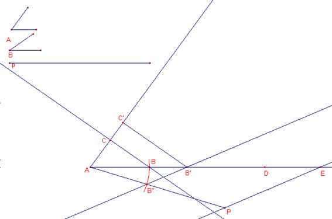

Problema
324.
Construir
un triángulo conocidos el perímetro y dos ángulos.
Solución de Ricard
Peiró i Estruch Profesor de Matemáticas del IES 1 de Xest (Valencia)
Dos triángulos
que tienen dos ángulos correspondientes iguales son semejantes.

Método de
construcción:
Supongamos
conocidos los ángulos A, B y el perímetro p
a) Dibujar
una semirecta r de origen A.
b) Dibujar
un triángulo  tal que ,
tal que ,
c) Trasladar
el perímetro p sobre la semirecta r.
, .
d) Dibujar
un segmento de origen A, y longitud p. .
e) Dibujar
la recta .
f) Trazar
una paralela a que pase por B’. Esta
recta corta el segmento en el punto B”.
g) Dibujar
el arco de circunferencia de centro A que pasa por B”. Este arco corta la semirecta r en el punto B.
h) Trazar
una recta paralela a que pase por el punto
B. Esta recta corta la prolongación de en el punto C.
Notemos que
los triángulos  ,
,  son semejantes.
son semejantes.